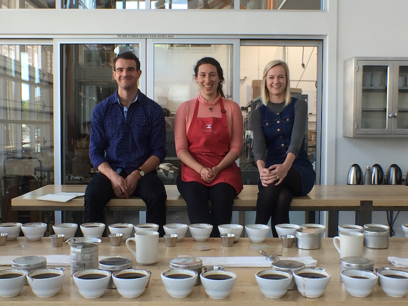

-
滴水的技术是最难以治疗的技术之一，所以许多练习和一些令人失望的杯子等待着一位开始的咖啡从业者。
Blue Bottle的零售培训师Bryn Garrehy描述了像“走向月球的黑暗面”那样的nel滴水。当涉及到nel滴水时，就像咖啡的规则进入零重力环境并转向已知世界颠倒了。
该方法始于日本，到二十世纪初，它是主要的酿造方法。连接到金属箍上的法兰绒过滤器形成一个小床，其中粗磨咖啡 - 几乎是单一来源的两倍量倒在上面。然后，温水以冰川率倾倒在地面的压痕上。
一旦你制作了第一个nel滴滤咖啡，请将过滤器冲洗干净（不要使用肥皂水）。将镍过滤器存放在冰箱内的干净塑料袋中。如果计划仅偶尔使用过滤器，请考虑将其冷冻在塑料袋中。
调节温度
由于浇注技术，研磨的粗糙度和相对凉爽的水 - 175℉，与典型的195℉至205℉的酿造范围相比，Nel滴滤咖啡是一种戏剧性的提取不足。为了保持相对稳定的温度，将水倒入过滤器预热过滤器和水壶，直到锅充满为止。研磨 咖啡，装配 工具 （刻度，计时器，金属勺子或黄油刀，用于塑造咖啡），并从过滤器中拧出多余的水并清空nel罐。最后，将过滤器放在玻璃水瓶上并加入咖啡。
您可以前往我们的Mint Plaza咖啡厅享用咖啡。或者，订购您自己的nel滴灌酿造工具包 在家尝试。
-
分享这个故事
也在顾客评价 这咖啡很漂亮？
Coffee Match将Blue Bottle的质量控制从我们的拔罐室带到您的厨房由蓝瓶工作人员
联系我们

查看BLUE COFFEE微博
庆祝咖啡的艺术和科学
阅读更多>